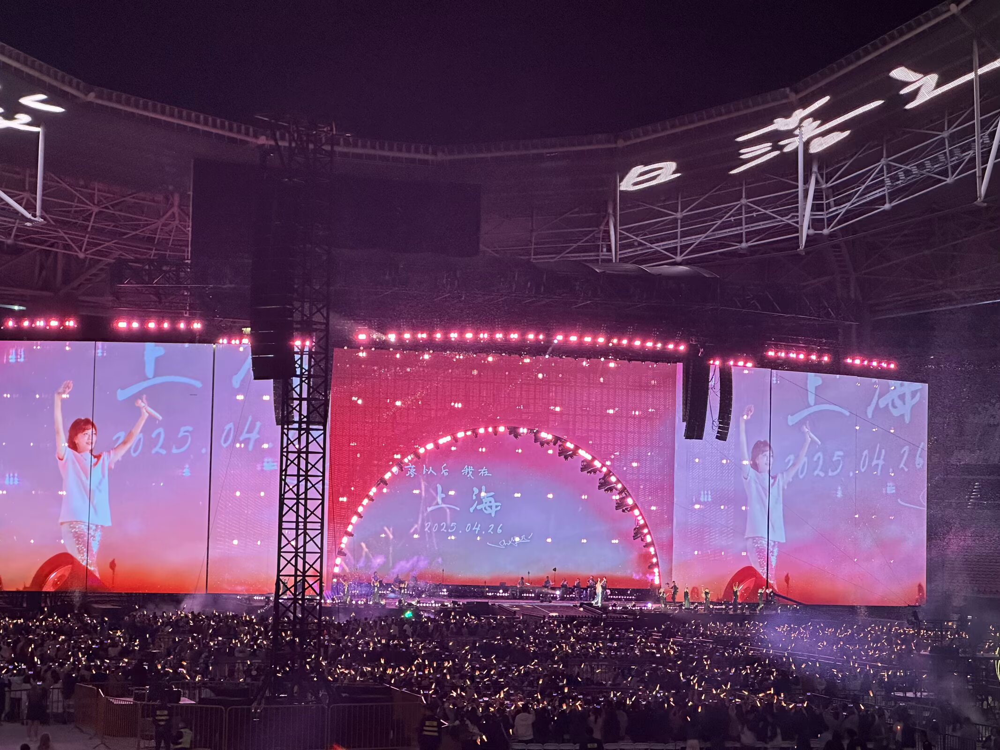
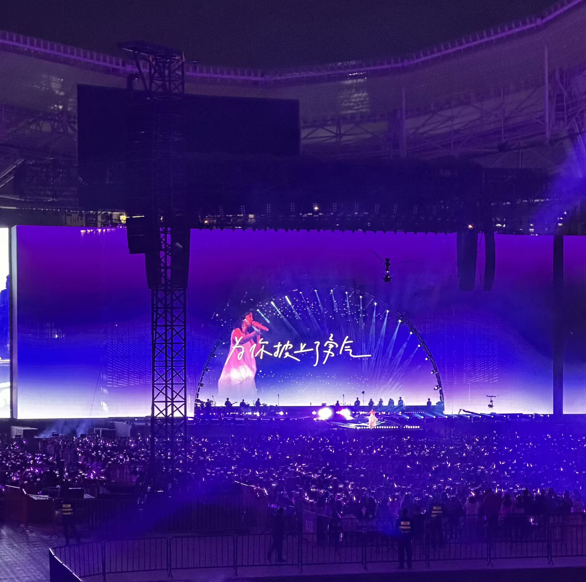
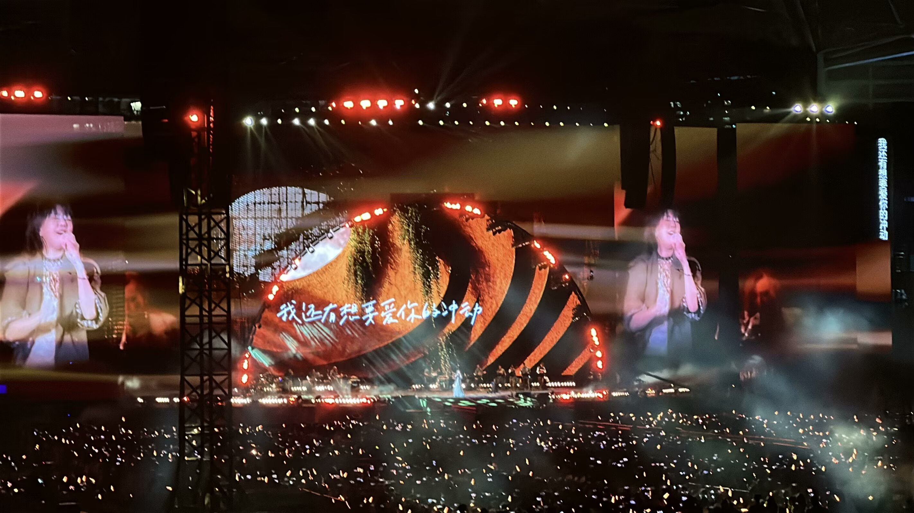
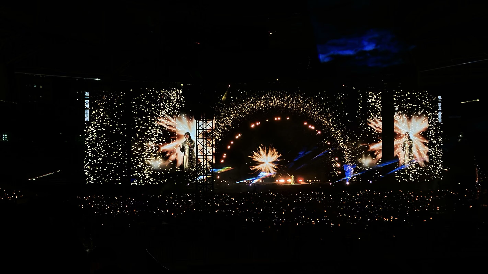

「2022年高三的某一個雨天 mp3裡偶然播到的《雨天》 就這樣有感而發地写进日記 也就這樣一直循环着陪伴了我整個青春
是书裡陳見夏和凌翔茜在补习班下课的傍晚耳机里一起听的《The Moment》
是高中下課傍晚跑步時 和好朋友们幻想著有一天要在海邊一起唱的《第一天》
是16岁那年克服恐惧站在好多人面前顫抖著唱出的《克卜勒》
是初中傍晚回家路上車載音箱裡一遍又一遍聽著的《尚好的青春》和《我的愛》
是6岁時第一次用音乐软件听到的 带来音樂啟蒙的《直來直往》和《綠光》
是無數流淚和傷痛的夜晚陪伴我的《我懷念的》和《我不難過》
是讓現在的 此時此刻的我 可以平靜面對生活和未來的《我要的幸福》和《逃亡》
每一首歌 每一個年歲的孫燕姿 构成了每一个不同樣子的我 而這些所有的我 都在這個晚上重逢
每一幀過去在眼前绽放又转瞬即逝 終於流下幸福的眼泪 我的青春终于画上句号
“这一刻，
时间变成行李，
越过生命悲喜，
陪伴着我前进。”
放心离开我 道別是為了延續回忆永恆的华丽.
謝謝上海 謝謝燕姿 謝謝這個 永葆着流泪天赋的真摯熱忱的我
———写于2025.4.27」




